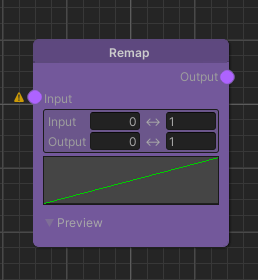
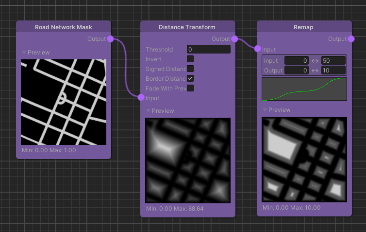

Remap
Overview
The Remap node converts map values within the input range into corresponding values in the output range.

Detailed Explanation
First, the value of each pixel is set in relation to the input range, where 0% is the minimum input value and 100% is the maximum input value. By default, the resulting percentage is the proportion within the input range. Each pixel's percentage is then applied to the output range, where 0% is the minimum output value and 100% is the maximum output value. The exact output value corresponds to the output range at that ratio. Values outside of the input and output range are clamped. As mentioned, the mapping from the input to the output range is proportional by default. This can be changed by defining a mapping curve. Here, the x-axis between 0 and 1 corresponds to the input range while the y-axis between 0 and 1 corresponds to the output range. Using the curve, various artistic effects can be achieved like smooth gradients, hard cuts, ripple effects or combinations thereof.
Parameters
Inputs
| Name | Type | Description |
|---|---|---|
| Input | Map | Provides the values that will be remapped. |
Controls
| Name | Type | Description |
|---|---|---|
| Input Min | float | The minimum input value smaller values are clamped to. |
| Input Max | float | The maximum input value larger values are clamped to. |
| Output Min | float | The minimum output result to which values at y = 0 on the curve are scaled and clamped to. |
| Output Max | float | The maximum output result to which values at y = 1 on the curve are scaled and clamped to. |
| Curve | AnimationCurve | The mapping curve between the input and output values. The min-max-ranges are scaled to values between 0 and 1. |
Use Cases
Remapping Terrain

The Remap node is very versatile. For example, it can be used to remap the result of a Distance Transform in order to generate a plateau to spawn objects on.